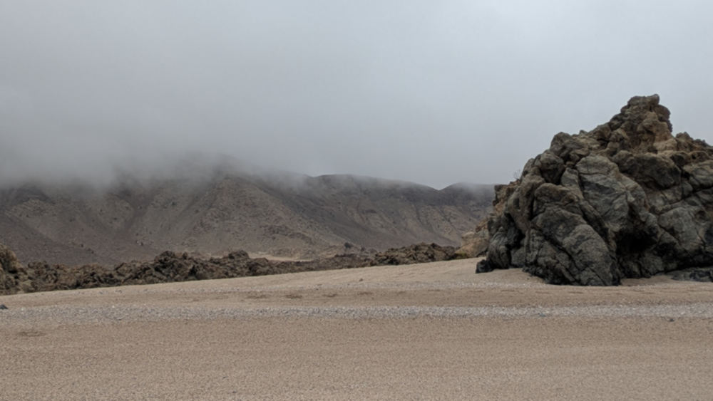

Odiseo y las sombras

Odiseo avanza solo por la arena fría. La niebla se abre y, entre las rocas, aparecen figuras que caminan hacia él: Euríloco, Elpénor, los compañeros que el mar y los monstruos se llevaron. Tienen los rostros pálidos como la ceniza y los pasos no dejan huellas.
Quiere abrazarlos, pero sus brazos atraviesan el aire. Una de las sombras habla con una voz que parece el viento: «Capitán, todavía te queda mar por delante. Elige bien el camino, porque ya no podemos remar contigo».